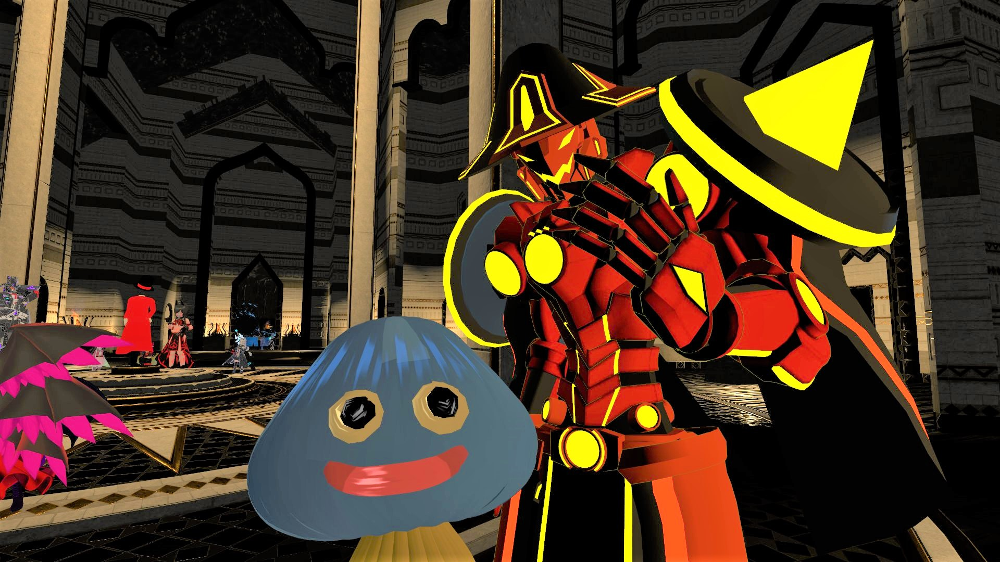
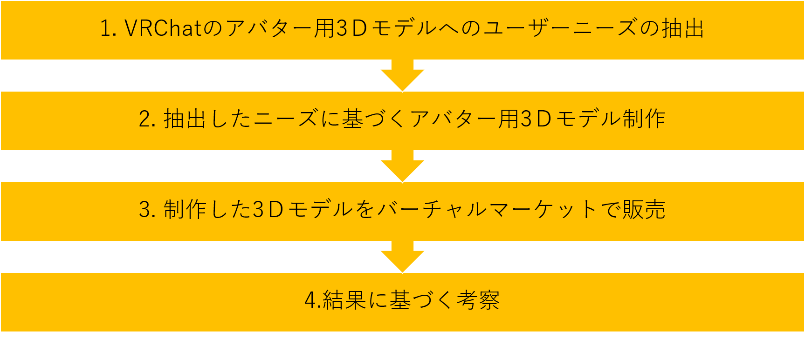

後期の研究内容と目的
VRChatのアバターの商品開発と販売
VRChatのユーザーにとって魅力的な
アバターとは何かを解明し、アバター用の3Ｄモデルを制作してバーチャルマーケットで販売する
理由
- 前期で研究したＶＲの様々な利用法の中で、特にソーシャルネットワークサービスとしてのVRChatに興味を引かれた
- VRChatでは3Ｄモデルを利用した「アバター」を使って交流をするため、ユーザーは自分の分身としてのアバターをどのように作成するかに大きな関心を持っている

VRChat内では自分の分身であるアバターを使って他人とコミュニケーションをとる
VRChatとは

VRChat社が運営する、仮想空間を使ったソーシャルネットワークサービス
- 仮想空間上で同時にオンラインしている世界中の人と交流できる
- 仮想空間内では自分の分身として「アバター」を使用する
アバター（Avatar）とは
-
《化身 (けしん) の意》コンピューターネットワーク上の仮想的な空間において、自分の分身として表示されるキャラクターのこと
（引用：goo辞書 https://dictionary.goo.ne.jp/word/%E3%82%A2%E3%83%90%E3%82%BF%E3%83%BC/ ）
- Twitterなどで使用するアイコンも一種のアバターと言える
VRChat上のアバターとは
- 運営側で用意されているものを使うこともできるが、VR空間上の自分自身であるので、自分好みにカスタマイズしたアバターを使いたいというニーズが高い
- アバターの代表的なパターン
ヒト型 メカ型 獣人型 モンスター型
研究方法
